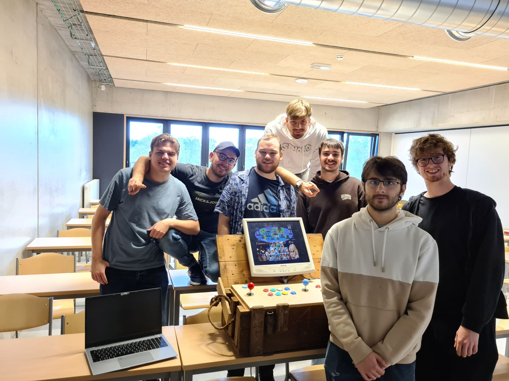
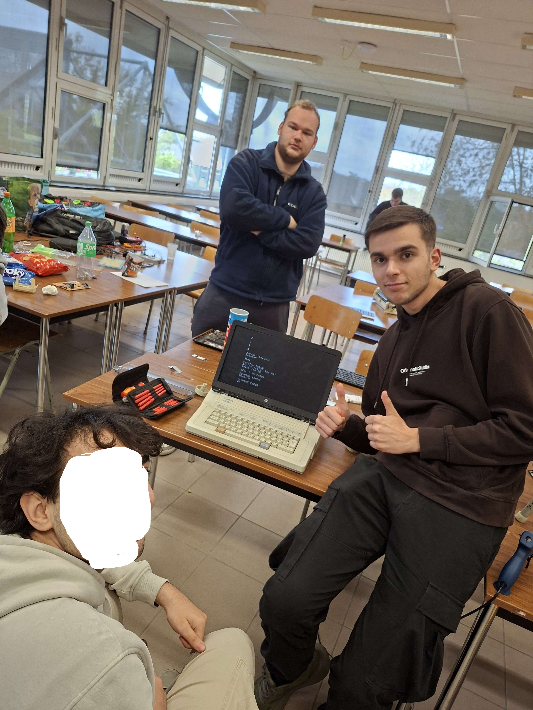
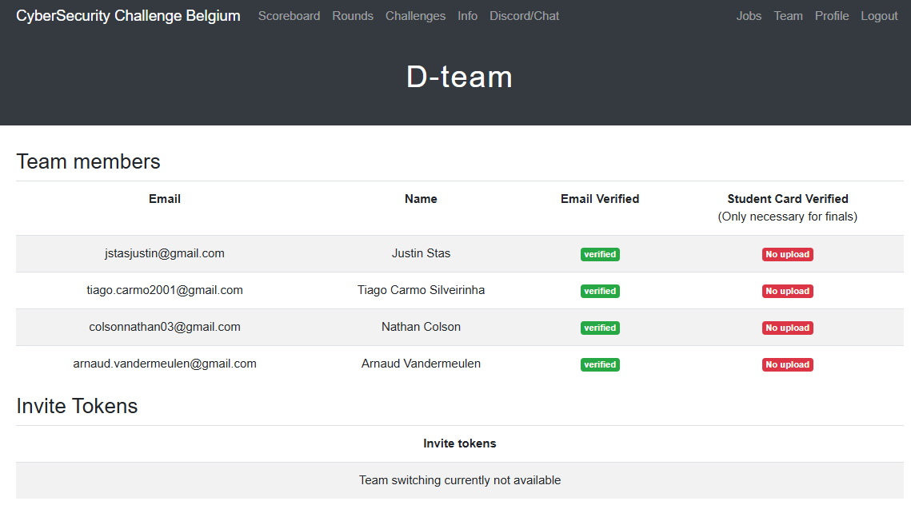
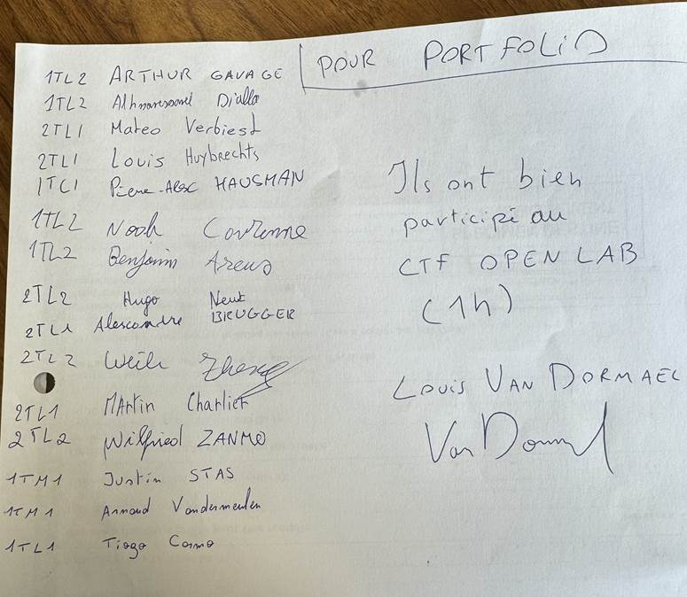
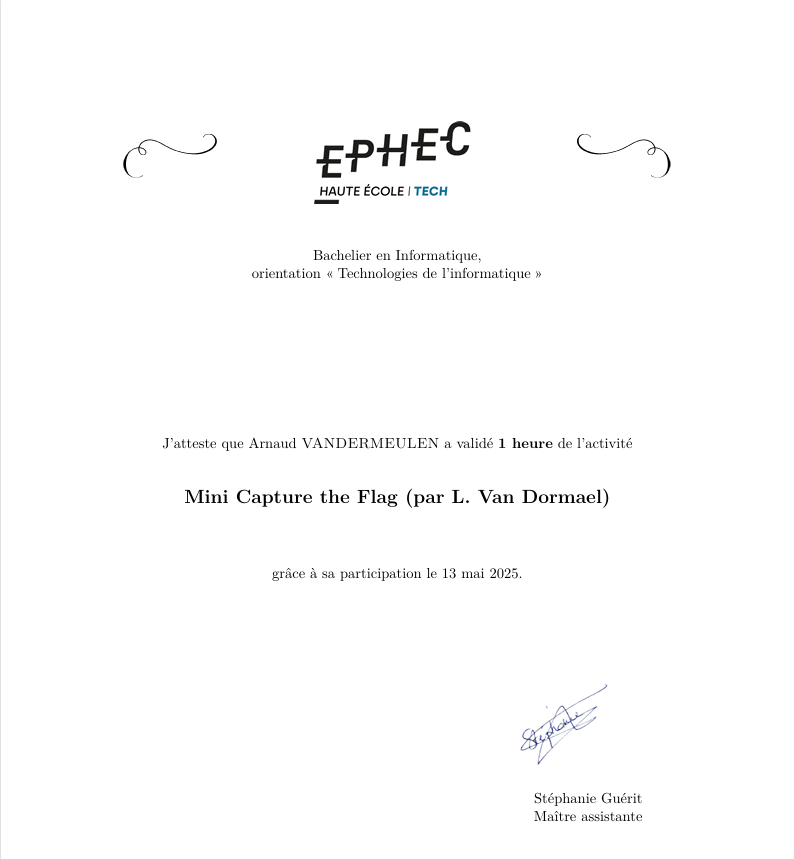
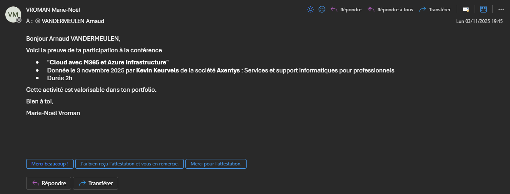
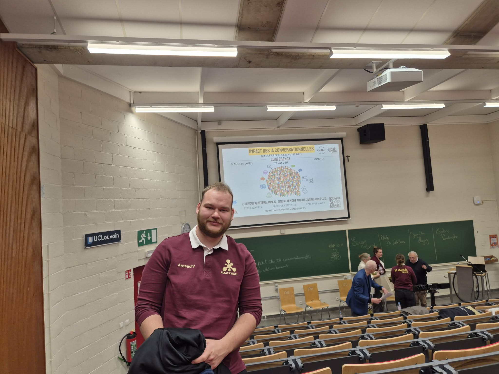

Bonjour, je suis Arnaud, étudiant en 3ème année de Bachelier en Technologie de l'informatique et bienvenue sur mon portfolio !
J'ai un grand intérêt pour les télécommunications, ayant un background dans ce domaine. J'aimerais, optimalement, continuer dans cette voie là.
Evidemment, notre bachelier étant généraliste, j'ai pu découvrir d'autres horizons comme l'électronique et le réseau. C'est tout naturellement que j'ai développé un intérêt pour l'IOT.
Ma plus grosse lacune actuelle est le développement mais j'ai pour projet d'y remédier.
Portfolio d'acquisition de compétences
Ce projet m'as permis, effectivement de pratiquer mon art de la menuiserie mais aussi mes talents liés à l'IT. Une installation d'OS, de l'électronique, et une bonne gestion de projet ont été nécessaires afin de mener ce projet à bien. Quand j'y pense, une des choses que j'ai le plus ressorti de cette expérience, c'est notre capacité à s'entre-aider en groupe et le partage de connaissances dont l'on a fait preuve.

Cet hackaton ci, fût compliqué, plus compliqué que l'année d'avant. J'ai constaté mon manque d'expérience et de compréhension du vaste monde qu'est l'électronique.Mais cela m'a permis de me surpasser et d'apprendre de mes co-équipiers.J'ai pu expérimenter différentes techniques de troubleshooting et de recherche de pannes sur un matériel jusqu'alors inconnu.

J'ai pu me tirer les cheveux pendant quelques heures sur des challenges d'une difficulté de niveau national. Il m'a permis de me rendre compte de mes lacunes en compréhension de cybersécurité de base mais aussi de dévellopement et d'utilisation d'outils spécialisés.Ce fût une épreuve difficile pour moi mais rendue sympathique et ludique grâce à mes camarades.

J'ai vu pour la première fois la complexité des challenges de Cyber sécurité.J'ai aussi constaté la différence de niveau avec certains de mes camarades mais c'était fort plaisant et enrichissant d'apprendre certains concepts en pratique, que nous allions voire plus tard en cours.Je me suis permis de mettre ces activités en dehors du spectre du CSBE vu les enseignements tirés des 2 expériences, totalement différents.

J'ai enfin pu retirer de la pratique dans less cours théoriques reçu à cette période là. J'ai trouvé cela super enrichissant pour la continuité de l'intégration des compétences apprises lors dess cours dispensé par nos professeurs.

Cette conférence m'a permis d'avoir une première vue des possibilités liées au cloud. Cette partie étant, à mon avis, faible voir manquante au sein des cours de notre bachelier. J'ai pu en effet, être un minimum à l'aise dans l'environnement Azure de mon stage grâce au retour d'expérience que Monsieur Keurvels nous a fourni.

Etant membre du Kap organisateur de l'activité, je l'ai dissociée des activités du Kap car je n'ai, en aucun point, participé à son élaboration.J'ai trouvé pertinent de s'intéressrt aux effets néfastes d'un outil qui s'est propagé au sein de notre école, et de toute la génération d'étudiants actuelle, comme des personnes bien installées dans le milieu du travail. L'Ephec essaie d'intégrer l'IA dans ces cours et je trouve que c'est une bonne initiative. J'ai aussi trouvé important la prise de conscience que cette conférence m'a apporté sur les tenants et aboutissants de l'utilisation de l'IA générative.

J'ai, durant cette année de Kap 2025-26, creusé des sujets cachés derrière nos cours, comme l'impression 3, qui aura servi à beaucoup de groupe pour leur projet, qui requiert une aisance avec les outils informatisés. Je peux aussi citer les drones et robots qui sont une compilation de savoir faire en terme d'électronique, de télécommunication et de développement. J'ai surtout essayé d'apporter ce partage de connaissance et d'intéret sur des dommaines beaucoup plus liés à l'informatique, les trois quarts des "Kaptechniciens.ennes" étant des ingénieurs civiles, rarement avec une spécialité dans le domaine de l'informatique.Quand je pense à la technologie, je vois des radios, des serveurs, des outils de DevSecOps, eux pensent généralement plus souflerie, aérodynamisme, mécanique quantique ou encore électro-mécanique.
Cela fait quelques années que je suis responsable du matériel de radiocommunication au sein de ma section locale. Je fais donc des tâches d'entretien et de conditionnement du matériel qui me permettent d'acquérir une bonne connaissance des radios. J'essaye donc de rester à jour sur les nouveautés techniques utilisées par le service secours de manière générale. Les cours de télécommunication et d'électronique dispensés à l'Ephec m'ont permis une meilleure compréhension technique facilitant mes tâches. C'est aussi grâce à mon expérience auprès de la croix rouge, que la compréhension des cours fût plus aisée. De même, former des utilisateurs néophytes aux spécifités des systèmes radio VHF et Astrid, entretient mes connaissances et ma pratique mais aussi continue à me former à long terme. Le courbe de croissance d'apprentissage suit aussi l'arrivage de nouveaux équipements de plus en plus complexes.
Cela fait depuis 2018 que je suis volontaire au service secours. Cette expérience me permet, évidemment, de pouvoir réagir en cas de problème. Mais si je doit en retirer d'autres aspects, ce sont le travail d'équipe et la communication qui se contruisent et évolue au fil des années. Travailler en équipe est essentiel dans le monde du travail et c'est en grosse partie grâce à la Croix-Rouge que j'en suis conscient et que je mets un point d'honneur à bien faire les choses en équipe. C'est aussi bonne école pour apprendre à communiquer correctement, autant avec ses collègues qu'avec des personnes paniquées ou en état second. On développe aussi bien de l'emphatie que de l'assertivité, qui sont deux composantes essentielles pour évoluer dans un monde ou nous ne sommes pas des professionnels mais nous travaillons comme tel.